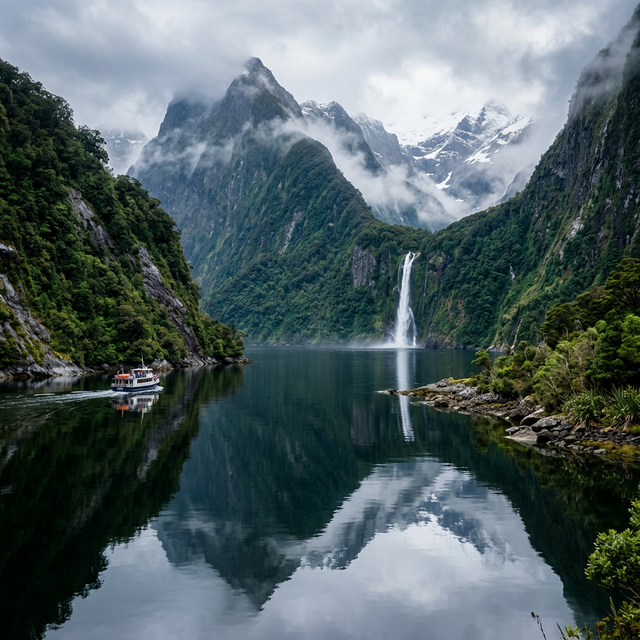

For some travelers, a beach vacation or a city break simply won't cut it. They crave the rush of adrenaline, the physical challenge of the elements, and the profound sense of accomplishment that only comes from pushing personal boundaries. If your idea of a perfect holiday involves carabiners, ice axes, or jumping out of perfectly good airplanes, this guide is for you.
Adventure tourism has evolved dramatically. It's no longer just about reckless risk-taking; it's about highly calculated, deeply immersive experiences that connect you with the most raw and powerful environments on the planet. Here are the NomadLens team's top 7 extreme destinations for thrill-seekers in 2026.
1. Patagonia, Chile & Argentina: The Edge of the World
Straddling the southern reaches of South America, Patagonia is a vast, untamed wilderness of jagged granite spires, massive glaciers, and relentless winds. It is arguably the holy grail for serious trekkers and mountaineers.
The Ultimate Thrill: The O Circuit in Torres del Paine National Park. This demanding 8-to-10 day trek covers 130 kilometers, taking you over the grueling John Gardner Pass alongside the immense Grey Glacier. For ice climbers, the Perito Moreno Glacier in Argentina offers guided ice-trekking that feels like navigating a frozen, alien landscape.
Why it's extreme: The weather in Patagonia is famously volatile. You can experience all four seasons in a single hour, with "Roaring Forties" winds capable of knocking a grown adult to the ground.
2. Queenstown, New Zealand: The Adrenaline Capital
Queenstown didn't invent adventure sports, but it arguably perfected them. Surrounded by the majestic Remarkables mountain range and built around the glacially carved Lake Wakatipu, the town's entire economy is fueled by adrenaline.
The Ultimate Thrill: The Nevis Swing and Bungy. Suspended 134 meters above the rugged Nevis River, it's one of the highest bungy jumps in the world. If you prefer horizontal speed, the Shotover Jet boat rockets through narrow canyons at 85 km/h, missing rock walls by inches.
Why it's extreme: It's the sheer concentration of high-octane activities. In one day, you can skydive from 15,000 feet, heli-ski on untouched powder, bungy jump off a bridge, and white-water raft down class V rapids.

3. Chamonix, France: The Birthplace of Extreme Alpinism
Nestled at the base of Mont Blanc — Western Europe's highest peak — Chamonix is steeped in mountaineering history. It's a place where extreme sports are woven into the very fabric of daily life, drawing the world's most elite climbers, skiers, and base jumpers.
The Ultimate Thrill: Skiing the Vallée Blanche. This unmarked, unmaintained 20-kilometer off-piste run descends 2,700 vertical meters over a heavily crevassed glacier. Alternatively, speed riding (a hybrid of skiing and paragliding) off the Aiguille du Midi provides a terrifyingly fast descent.
Why it's extreme: The scale of the Mont Blanc massif is humbling. The terrain is inherently dangerous, requiring high-level technical skills and deep knowledge of avalanche safety and crevasse rescue.
4. Interlaken & Lauterbrunnen, Switzerland: The Vertical Playground
Set among the iconic peaks of the Eiger, Mönch, and Jungfrau, this region of Switzerland looks like a fairy tale but serves as a proving ground for extreme athletes. The Lauterbrunnen Valley, with its sheer 1,000-meter cliffs, is globally renowned among the BASE jumping community.
The Ultimate Thrill: Canyon swinging at Glacier Gorge in Grindelwald involves stepping off a platform 90 meters above a glacial river and swinging into a narrow canyon at 120 km/h. For a slightly less terrifying but equally spectacular thrill, paragliding over Interlaken offers views of two lakes and the high Alps.
Why it's extreme: The topography here is uniquely dramatic. The extreme vertical drops combined with Swiss precision engineering have created access points to jumps and descents that simply don't exist elsewhere.
5. Victoria Falls, Zambia/Zimbabwe: The Smoke That Thunders
One of the Seven Natural Wonders of the World, Victoria Falls isn't just a place to look at water. The Zambezi River below the falls provides some of the most intense and sustained white-water rafting on the planet.
The Ultimate Thrill: White-water rafting the Zambezi. Rapids with names like "The Terminator," "Oblivion," and "Commercial Suicide" offer a relentless assault of Class IV and V white water. During the dry season (August to December), the devil's pool allows you to swim right to the lip of the 108-meter drop.
Why it's extreme: The volume and power of the Zambezi are overwhelming. When you combine massive rapids with the presence of crocodiles and hippos, it's an environment that demands absolute respect.
6. Moab, Utah, USA: The Red Rock Crucible
Surrounded by Arches and Canyonlands National Parks, Moab is the undisputed mecca for extreme desert sports. The alien landscape of slickrock domes, deep canyons, and towering sandstone spires provides a hyper-specialized playground.
The Ultimate Thrill: Mountain biking the "Whole Enchilada" trail. This 34-mile epic drops 7,000 vertical feet, starting in alpine tundra and ending at the Colorado River, testing every ounce of a rider's technical ability. Rock climbers flock to the Fisher Towers for multi-pitch ascents of crumbling sandstone spires.
Why it's extreme: The environment is uniquely unforgiving. The heat can be lethal, the terrain is abrasive, and the "slickrock" (which is actually ironically grippy until it gets wet) allows for riding and climbing angles that defy logic.
7. Svalbard, Norway: The High Arctic Challenge
At 78 degrees North, roughly halfway between mainland Norway and the North Pole, Svalbard is one of the world's northernmost inhabited areas. It's an environment of glaciers, sea ice, and perpetual darkness in winter or midnight sun in summer.
The Ultimate Thrill: Multi-day snowmobile or dogsled expeditions across the frozen tundra. Navigating sea ice, exploring ice caves inside glaciers, and camping in temperatures that routinely drop below -20°C (-4°F).
Why it's extreme: The element of isolation and the presence of apex predators. There are more polar bears than humans in Svalbard. Carrying a flare gun and high-powered rifle (or hiring an armed guide) is legally required when venturing outside the main settlement of Longyearbyen. You are no longer at the top of the food chain.
Preparing for Extreme Travel
Embarking on these adventures requires more than just booking a flight. Proper preparation is the difference between a life-changing experience and a dangerous ordeal.
- Insurance: Standard travel insurance almost never covers extreme sports. You must purchase specialized policies that cover high-altitude trekking, off-piste skiing, or whatever specific activity you plan to do. Ensure it includes helicopter evacuation.
- Physical Preparation: Respect the environment. Train specifically for the activity you're undertaking months in advance. Altitude, particular, is the great equalizer and cares nothing for your marathon times at sea level.
- Local Expertise: Unless you are a highly experienced professional, always hire certified local guides. Their knowledge of micro-climates, snowpack stability, and local hazards is invaluable.